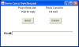

Tymeac Demonstration System
The Tymeac Demonstration System is an example of the User Classes. Tymeac accesses the User Classes when no
Configuration file is present at Tymeac Start Up.
We fill in the User Classes (part of the samples) with
the following to demonstrate Tymeac functionality.
The demonstration system consists of twelve basic queues:
- AAAA BBBB CCCC DDDD EEEE
- Notify
- CancelQueue
- JQue1 JQue2 JQue3 JQue4
JQueAgent
eleven basic functions:
- Function_1 -- Function_8
- TyNotify
- CancelDemo
- JFunction_1
twelve basic Processing Application Classes: [prefix com.tymeac.serveruser]
- Demo1 Demo2 Demo3 DemoRecur
DemoAgent1
- DemoNotify
- DemoCancel
- JDemo1 JDemo2 JDemo3 JDemo4
JDemoAgent
and tree frame Classes with accompanying Beans: [prefix com.tymeac.demo.[j]frame]
- TyDemoT1 -- TyDemoT1Bean
- TyDemoT3 -- TyDemoT3Bean, TyDemoT3Base,
TyDemoT3Instant, TyDemoT3Thread
- TyDemoJiniT1 -- TyDemoJiniT1Bean
and one AWT frame Class with accompanying Beans [prefix com.tymeac.demo]
- TyDemoAWTCancel -- TyDemoAWTCancelBean
- TyDemoAWTCancelThread1
- TyDemoAWTCancelThread2
Tymeac provides the Demonstration System to exhibit the flow of Tymeac functionality.
The supplied application Classes take very simple input fields and form a very simple
output message.
Tymeac provides the source code for all the above classes. The code is available
for altering by the user to suit particular needs.
Processing Application Classes
Classes Demo1, Demo2, and Demo3 are the Processing
Application Classes for Queues AAAA, BBBB, and CCCC respectively.
The input String to these Classes is a stream of digits: 112233445566778899.
These digits reflect the concatenated stream captured by the Frame Class, T1. The
digits are logically grouped into three groups of two digits each.
That is, digits 11 are the A1 digits,
digits 22 are the A2 digits,
digits 33 are the A3 digits.
This follows for the B and C groups.
Class Demo1 is the processing application Class for Queue AAAA.
It uses the "A" group, (first six, 112233), of digits. The output String
from this Class is:
#Demo1: A1(11) + A2(22) + A3(33) = (66)#
Class Demo2 is the processing application Class for Queue BBBB. It
uses the "B" group, (second six, 445566), of digits. The output String
from this Class is:
#Demo2: B1(44) + B2(55) + B3(66) = (165)#
Class Demo3 is the processing application Class for Queue CCCC. It
uses the "C" group, (third six, 778899), of digits. The output String from
this Class is:
#Demo3: C1(77) + C2(88) + C3(99) = (264)#
Class DemoAgent1 is the Output Agent
for Functions 4, 5, and 6. It takes the Object array from Queue's AAAA, BBBB, and
CCCC and does nothing with them. It is the user's responsibility to add code to do
that which is desired, or remove the commented println(S).
Class DemoRecur is the processing application Class for Queue
EEEE. It is the recursive demonstration. The Class forms the String:
#DemoRecur: A1(11) + A2(22) + A3(33) = (66)#
It then requests Tymeac processing for Function_2 with a String,
"223344556677889911" (this uses the Demo1 processing application class) and
appends that output String to its own forming:
#DemoRecur: A1(11) + A2(22) + A3(33) =
(66)#Tymeac
SR(0000)#Demo1:
A1(22)+ A2(33) + A3(44) = (88)#
Class DemoNotify is the sample Notification Processing Application
Class. It takes the String, cast to an Object, generated by Tymeac internal
processing and does nothing with it. It is the user's responsibility to add code to
do that which is desired, or remove the commented println().
Class DemoCancel the processing application Class
for Queue CancelQueue. It demonstrates how to cancel a synchronous request
using a GUI.
Classes JDemo1, JDemo2, JDemo3, and Demo4 are the Processing
Application Classes for Queues JQue1, JQue2, JQue3, and JQue4 respectively.
The "J" Series is the Jini Document Service. These classes perform no
work. They return a String, cast to an Object simply to demonstrate logic flow.
Class JDemoAgent is the Output Agent
for JFunction_1. It takes the Object array from Queue's JQue1, JQue2, JQue3, and
JQue4 and does nothing with them. It is the user's responsibility to add code to do
that which is desired.
The demonstration Functions are as follows:
Function_1 -- Queue's AAAA, AAAA, AAAA. (This demonstrates using
the same Queue multiple times.)
Function_2 -- Queue AAAA
Function_3 -- Queue's AAAA, BBBB.
Function_4 -- Queue's AAAA, BBBB, CCCC.
Function_5 -- Queue AAAA, with Output Agent Queue, DDDD.
Function _6 -- Queue's AAAA, BBBB,with Output Agent Queue, DDDD.
Function_7 -- Queue's AAAA, BBBB, CCCC, with Output Agent Queue, DDDD.
Function_8 -- Queue EEEE.
TyNotify -- Queue Notify.
DemoCancel -- Queue CancelQueue.
JFunction_1 -- Queue's JQue1, JQue2, JQue3, and JQue4, .with Output
Agent Queue, JQueAgent.
Functions 2, 3, and 4 are redundant.
Functions 5, 6, and 7 are the same as Functions 2, 3, and 4 with the addition of an
Output Agent Queue, (DDDD). Since the Output Agent Queue is only relevant to Asynchronous
Requests, Functions 5, 6, and 7 are sufficient to demonstrate both Synchronous and Asynchronous
processing.
Functions 2, 3 and 4 simply exemplify functions without an Output Agent Queue. It is
the user-written request (Tymeac Remote Object Method invoked) that determines
Synchronous or Asynchronous processing.
JFunction_1 is actually called from within a Jini Service. It performs the same as any
other Tymeac Function. Since the Output Agent Queue is only relevant to Asynchronous
Requests, this Functions is sufficient to demonstrate both Synchronous
and Asynchronous processing.
Tymeac Queue's are unconcerned with the overall processing requirements; they just
execute their methods. Tymeac Functions simply tie together the Queues and pass input to,
and take output from, the Processing Application Classes. This separates the programs from
the computer complex.
The JFrame Classes
Tymeac provides source code for all these classes.
Class TyDemoT1 is the single event request. Enter any
one of the Function names, above. Enter values for groups A1-3, B1-3, and C1-3
(only two digits in each group are needed). Press SEND.
Result: displays the result. When requesting Functions with multiple Queues, the
result message consists of the concatenated output of each Queue in the order that each
Queue finishes processing. Execution variables determine the order of completion.
Class TyDemoT1Bean is the Bean in support of this Frame.
Class TyDemoT3 is the multiple event request. This
Class provides a "load" on the system. It starts as many threads as
desired. Each thread does multiple requests to Tymeac.One should carefully
consider the processor limits for cycles, RMI, and storage in determining the number
of threads to start.
Class TyDemoT3Bean is the Bean in support of this Frame. Class TyDemoT3Base is
the base storage used by all the started threads. Class TyDemoT3Instant is an
intermediary between instantiating all the threads and starting those threads. Class
TyDemoT3Thread is the thread Class.
Class TyDemoJiniT1 is the Jini Client
Demonstration. Enter the name of a document and either press the send-with-wait
button or the send-without-wait button.
The Frame Classes
Canceling a synchronous request is difficult to
understand. We provide this simple AWT GUI to demonstrate how this works.
Swing requires modification of the GUI fields on the Event Queue.
Therefore, we provide this class using basic AWT.
TyDemoAWTCancel is the GUI
TyDemoAWTCancelBean is the logic module for processing the button logic
TyDemoAWTCancelThread1 is the thread to handle the syncRequest() to
Tymeac
TyDemoAWTCancelThread2 is the thread to handle the cancelSyncReq()
to Tymeac

(click for full image)
Send Button
When pressed, a syncRequest() is sent to Tymeac. The timeout is 40 seconds.
If you do nothing else, the Result: will display the result of processing at
the Server.
If you cancel a request and send another request and just wait, the second
send will timeout. The server is still processing the first request (currently
a sleep() of 30 seconds.)
You can do Send/Cancel repeatedly.
You cannot do Send, Send, Cancel.
Each Send generates a new cancel word and the logic does not save this
field. When you try to Send a second time and the Send Thread is waiting for a
reply, it ignores subsequent calls.
Cancel Button
When pressed after the Send Button, a cancelSyncReq() is sent to
Tymeac. The Result: will display the result of canceling the request.
System.out
Displays messages from both buttons.
Threads
Both calls to Tymeac are done in separate threads.
N.B.
The logic in this demonstration is rudimentary. It's just a simple
show-how. Yes we know it's ugly.
Scripts
We provide a script to run this demo.
The Command Line Classes
[prefix com.tymeac.demo.]
Tymeac provides source code for all these classes.
DemoClientBase is the base class from which all the other classes
extend. It is the place where all the processing logic lives.
DemoClient_1-4 Each of these classes invokes the
Synchronous Request method of the Tymeac Server for Function_1-4 respectively, and
println()'s the result.
DemoClient_5-7 Each of these classes invokes the
Asynchronous Request method of the Tymeac Server for Function_5-7 respectively, and
println()'s the result.
DemoClient_8 This class invokes the Synchronous Request
method of the Tymeac Server for Function_8 and println()'s the result. This is the
recursive test.
TyDemoClient_multi This class invokes the Synchronous
Request method of the Tymeac Server for Function_1, 2, 3, and 4, invokes the Asynchronous
Request method of the Tymeac Server for Function_5, 6, and 7, and println()'s the result
of each.
DemoClient_Shutdown This class invokes the shutdown
Request method of the Tymeac Server and println()'s the result. To fully shutdown
the system run this class several times.
TyDemoClient_getStatus This class queries Tymeac for the
status of a prior Asynchronous Request. Before running this class, fill in the
MilliTime and Request Id, and, recompile. The return String is the same as the Frame
Class, TyReqStatus.
Additionally, the demonstration system provides source code for twelve queues:
As part of the Tymeac Tutorial:
- Cylinder_Queue Refill_Queue
TopCap_Queue BottomCap_Queue CostAgent_Queue
- Tube_Queue Ink_Queue MetalTip_Queue
Ball_Queue
As part of the Callback demonstration:
three additional functions:
As part of the Tymeac Tutorial:
As part of the Callback demonstration:
thirteen additional Processing Application Classes: [prefix com.tymeac.serveruser.]
As part of the Tymeac Tutorial:
- CostofCylinder CostofRefill CostofTopCap
CostofBottomCap CostofTube CostofInk CostofMetalTip
CostofBall CostAgent
As part of the Callback demonstration: [prefix com.tymeac.serveruser.]
- DemoCallback1 DemoCallback2 DemoCallback3
DemoAgentCallback
| {kind=link}